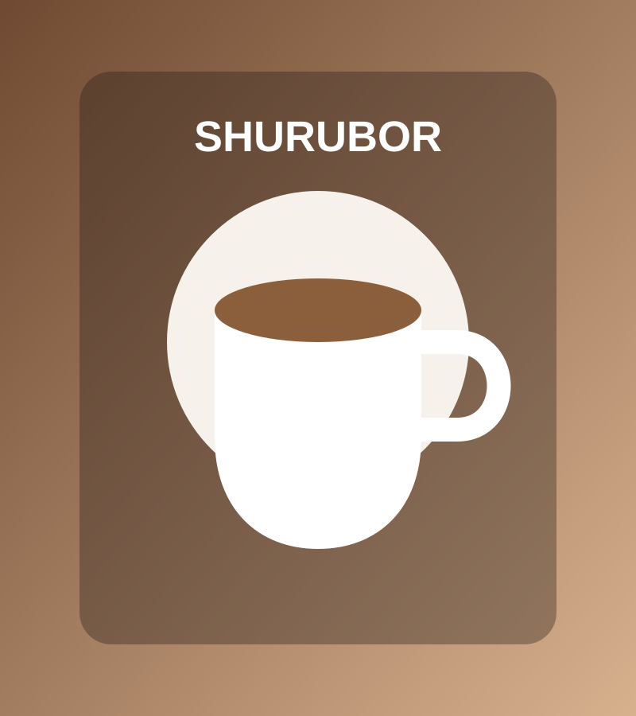
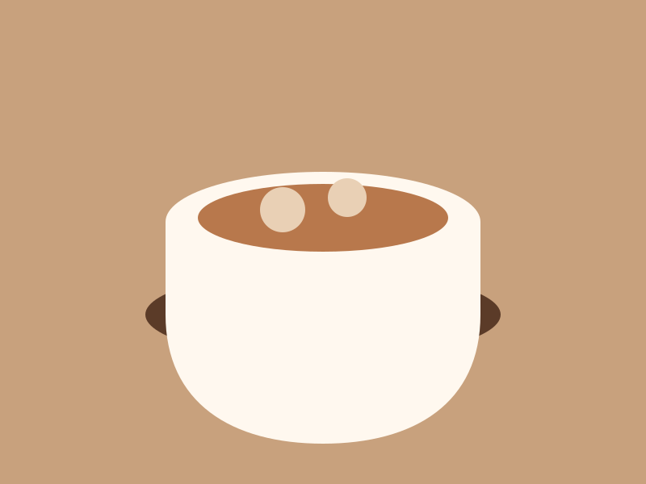
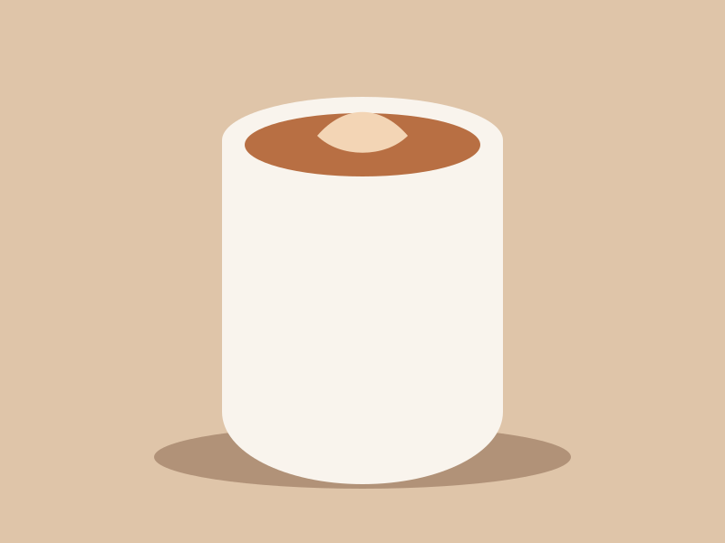
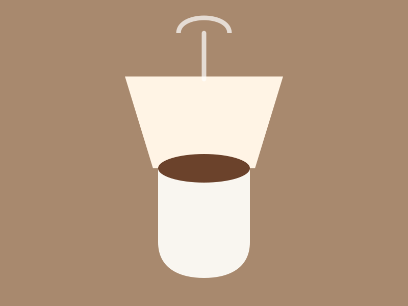

Место, куда заходят за хорошим кофе, а остаются из-за атмосферы.


Эспрессо, молоко и воздушная пенка.

Мягкий кофейный вкус и нежная молочная текстура.

Чистый вкус зерна и насыщенный аромат.
Небольшая кофейня с характером. Здесь можно взять кофе с собой, спокойно посидеть, встретиться с друзьями или просто сделать паузу посреди дня.
Новосибирск, ул. Ленина, 3
Ежедневно примерно с 08:00 до 22:00
+7 (383) 205-20-79